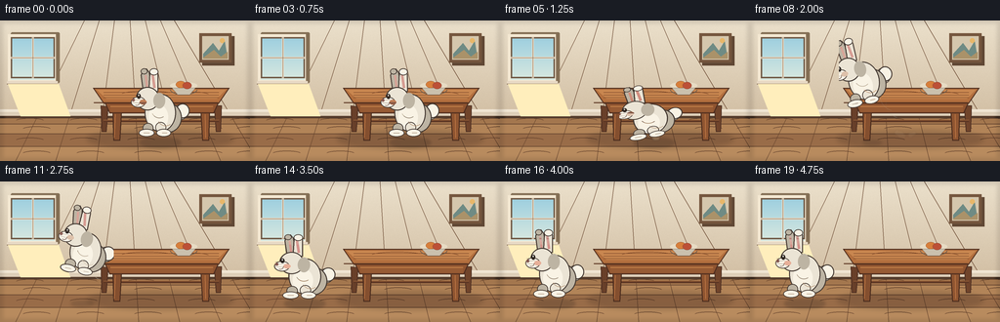
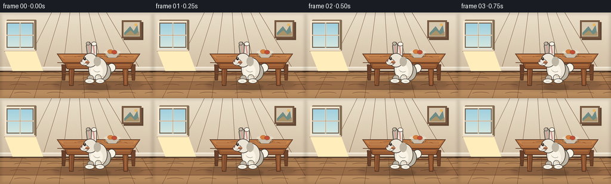
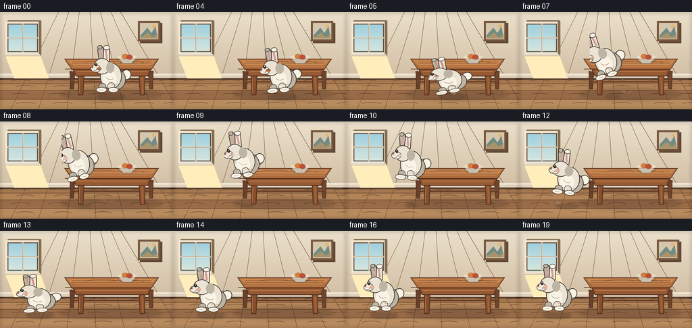
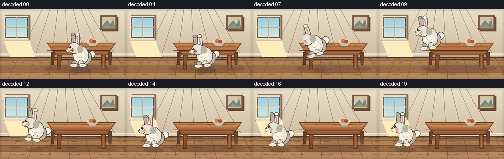

CODING AGENTS AS PIXEL WORLD MODELS
traex/DeepSeek-V4.1-Flash · dynamic_spatial_relationship_0019
点击播放 · 原生 RGB 像素
逐轮保存的候选
回放视频、检查图与代码变化。
每份候选均可单独播放。实际图片检查记录在下方工具轨迹中。
候选 01播放与检查图
点击播放 · 原生 RGB 像素

展开代码变化
--- 上一保存版本
+++ 本次保存版本
@@ -0,0 +1,407 @@
+from pathlib import Path
+import math
+
+import numpy as np
+from PIL import Image, ImageDraw, ImageFilter
+
+import artifact_io
+
+
+W, H = 256, 144
+S = 4
+FPS = 4
+FRAMES = 20
+
+
+def sc(value):
+ return int(round(value * S))
+
+
+def box(values):
+ return tuple(sc(value) for value in values)
+
+
+def color(rgb, alpha=255):
+ return (*rgb, alpha)
+
+
+def make_background():
+ rng = np.random.default_rng(19)
+ yy, xx = np.mgrid[0:H * S, 0:W * S]
+
+ wall_top = np.array([235, 224, 203], dtype=np.float32)
+ wall_bottom = np.array([210, 191, 164], dtype=np.float32)
+ floor_line = 98 * S
+ blend = np.clip(yy / floor_line, 0.0, 1.0)
+ image = wall_top[None, None, :] * (1.0 - blend[:, :, None])
+ image += wall_bottom[None, None, :] * blend[:, :, None]
+
+ # Gentle mottling keeps the wall from looking like a flat fill at this scale.
+ mottling = rng.normal(0.0, 2.3, (H * S, W * S, 1))
+ image += mottling
+ image = np.clip(image, 0, 255).astype(np.uint8)
+ canvas = Image.fromarray(image).convert("RGBA")
+ draw = ImageDraw.Draw(canvas, "RGBA")
+
+ # Oak floor with perspective seams.
+ floor_colors = [(164, 119, 78), (178, 132, 88), (153, 108, 72), (184, 139, 94)]
+ board_edges = [98, 106, 116, 129, 144]
+ for index in range(len(board_edges) - 1):
+ y0, y1 = board_edges[index], board_edges[index + 1]
+ draw.rectangle(box((0, y0, W, y1)), fill=color(floor_colors[index % 4]))
+ draw.line(box((0, y0, W, y0)), fill=color((105, 72, 49), 110), width=sc(0.7))
+
+ vanishing = (128, -85)
+ for x_bottom in [16, 57, 99, 142, 184, 226, 264]:
+ draw.line(
+ (sc(x_bottom), sc(H), sc(vanishing[0]), sc(vanishing[1])),
+ fill=color((103, 69, 46), 72),
+ width=sc(0.55),
+ )
+
+ # Sparse wood grain.
+ for row, y in enumerate([102.5, 111.0, 122.5, 136.0]):
+ for x in [18, 73, 132, 194, 237]:
+ offset = 5 if row % 2 else -2
+ draw.arc(
+ box((x + offset, y - 2.5, x + offset + 29, y + 3.0)),
+ 195,
+ 345,
+ fill=color((91, 58, 39), 55),
+ width=sc(0.5),
+ )
+
+ # Baseboard and its shadow.
+ draw.rectangle(box((0, 91, W, 98)), fill=color((222, 207, 185)))
+ draw.rectangle(box((0, 91, W, 93.5)), fill=color((240, 229, 211)))
+ draw.line(box((0, 98, W, 98)), fill=color((106, 79, 59), 110), width=sc(0.8))
+ draw.rectangle(box((0, 98, W, 100)), fill=color((84, 60, 44), 25))
+
+ # Window, with a pale morning sky and a soft sill shadow.
+ draw.rounded_rectangle(box((11, 12, 61, 64)), radius=sc(1.4), fill=color((132, 111, 85), 70))
+ draw.rectangle(box((8, 14, 57, 62)), fill=color((244, 232, 210)))
+ sky = Image.new("RGBA", (sc(45), sc(44)), (0, 0, 0, 0))
+ sky_draw = ImageDraw.Draw(sky)
+ for y in range(sky.height):
+ t = y / max(1, sky.height - 1)
+ top = np.array([157, 207, 223], dtype=np.float32)
+ bottom = np.array([216, 232, 224], dtype=np.float32)
+ c = tuple(np.clip(top * (1 - t) + bottom * t, 0, 255).astype(np.uint8))
+ sky_draw.line((0, y, sky.width, y), fill=color(c))
+ canvas.alpha_composite(sky, (sc(11), sc(17)))
+ draw = ImageDraw.Draw(canvas, "RGBA")
+ draw.rectangle(box((11, 17, 56, 59)), outline=color((111, 89, 69)), width=sc(1.4))
+ draw.line(box((33.5, 17, 33.5, 59)), fill=color((238, 225, 204)), width=sc(2.0))
+ draw.line(box((11, 38, 56, 38)), fill=color((238, 225, 204)), width=sc(2.0))
+ draw.line(box((33.5, 17, 33.5, 59)), fill=color((140, 112, 84), 90), width=sc(0.6))
+ draw.line(box((11, 38, 56, 38)), fill=color((140, 112, 84), 90), width=sc(0.6))
+ draw.rectangle(box((7, 62, 59, 65)), fill=color((231, 216, 195)))
+ draw.line(box((7, 65, 59, 65)), fill=color((118, 91, 67), 120), width=sc(0.8))
+ draw.polygon(
+ box((8, 65, 60, 65, 72, 98, 21, 98)),
+ fill=color((255, 238, 188), 18),
+ )
+
+ # A small framed landscape balances the window without competing with the action.
+ draw.rectangle(box((207, 16, 240, 46)), fill=color((97, 72, 53), 80))
+ draw.rectangle(box((204, 13, 237, 43)), fill=color((117, 86, 62)))
+ draw.rectangle(box((207, 16, 234, 40)), fill=color((213, 199, 173)))
+ draw.polygon(
+ box((208, 34, 218, 23, 224, 31, 230, 21, 233, 39, 208, 39)),
+ fill=color((111, 139, 132)),
+ )
+ draw.polygon(
+ box((208, 38, 219, 30, 226, 37, 233, 32, 233, 39, 208, 39)),
+ fill=color((170, 146, 105)),
+ )
+ draw.ellipse(box((225, 18, 230, 23)), fill=color((231, 183, 105)))
+
+ # Table's broad floor shadow.
+ table_shadow = Image.new("RGBA", (W * S, H * S), (0, 0, 0, 0))
+ shadow_draw = ImageDraw.Draw(table_shadow, "RGBA")
+ shadow_draw.ellipse(box((89, 112, 239, 131)), fill=color((58, 38, 28), 55))
+ shadow_draw.ellipse(box((111, 117, 219, 127)), fill=color((49, 32, 24), 42))
+ table_shadow = table_shadow.filter(ImageFilter.GaussianBlur(sc(2.4)))
+ canvas.alpha_composite(table_shadow)
+ draw = ImageDraw.Draw(canvas, "RGBA")
+
+ # Back legs and stretcher.
+ draw.polygon(
+ box((103, 87, 111, 88, 109, 114, 104, 114)),
+ fill=color((104, 63, 41)),
+ outline=color((73, 44, 32)),
+ width=sc(0.8),
+ )
+ draw.polygon(
+ box((219, 87, 227, 87, 226, 114, 221, 114)),
+ fill=color((112, 68, 43)),
+ outline=color((73, 44, 32)),
+ width=sc(0.8),
+ )
+ draw.line(box((106, 103, 224, 103)), fill=color((96, 57, 37)), width=sc(2.2))
+ draw.line(box((106, 102, 224, 102)), fill=color((149, 94, 55), 150), width=sc(0.7))
+
+ # Front legs.
+ draw.polygon(
+ box((115, 89, 125, 89, 123, 123, 116, 123)),
+ fill=color((132, 79, 47)),
+ outline=color((74, 44, 30)),
+ width=sc(0.9),
+ )
+ draw.polygon(
+ box((205, 89, 215, 89, 214, 123, 207, 123)),
+ fill=color((143, 85, 49)),
+ outline=color((74, 44, 30)),
+ width=sc(0.9),
+ )
+ draw.line(box((118, 96, 117, 120)), fill=color((187, 117, 67), 115), width=sc(0.7))
+ draw.line(box((210, 96, 210.5, 120)), fill=color((190, 119, 68), 120), width=sc(0.7))
+
+ # Table apron and top.
+ draw.polygon(
+ box((107, 84, 224, 84, 219, 95, 112, 95)),
+ fill=color((143, 84, 48)),
+ outline=color((77, 45, 31)),
+ width=sc(1.0),
+ )
+ draw.rectangle(box((113, 87, 218, 93)), fill=color((151, 91, 52)))
+ draw.line(box((113, 88, 218, 88)), fill=color((205, 137, 78), 145), width=sc(0.7))
+
+ draw.polygon(
+ box((95, 69, 235, 69, 224, 85, 106, 85)),
+ fill=color((178, 111, 62)),
+ outline=color((77, 44, 29)),
+ width=sc(1.1),
+ )
+ draw.polygon(
+ box((99, 71, 231, 71, 222, 80, 109, 80)),
+ fill=color((201, 135, 80)),
+ )
+ for y, alpha in [(73.5, 70), (76.2, 58), (78.7, 48)]:
+ draw.line(box((106, y, 224, y)), fill=color((123, 72, 41), alpha), width=sc(0.55))
+ draw.arc(box((124, 72, 177, 79)), 195, 330, fill=color((119, 67, 38), 75), width=sc(0.6))
+ draw.arc(box((179, 73, 215, 80)), 195, 335, fill=color((118, 66, 37), 70), width=sc(0.6))
+ draw.line(box((96, 84, 223, 84)), fill=color((91, 53, 33), 180), width=sc(1.0))
+
+ # Ceramic fruit bowl.
+ draw.ellipse(box((174, 63, 202, 70)), fill=color((231, 219, 196)))
+ draw.arc(box((174, 65, 202, 76)), 4, 176, fill=color((101, 91, 79)), width=sc(0.8))
+ draw.polygon(
+ box((176, 69, 200, 69, 194, 76, 182, 76)),
+ fill=color((202, 192, 173)),
+ outline=color((105, 93, 79)),
+ )
+ draw.ellipse(box((180, 62, 190, 69)), fill=color((215, 127, 60)), outline=color((130, 73, 41)))
+ draw.ellipse(box((187, 63, 196, 70)), fill=color((188, 80, 55)), outline=color((117, 55, 40)))
+
+ return canvas
+
+
+def make_rabbit_sprite():
+ sprite_w, sprite_h = 66, 82
+ sprite = Image.new("RGBA", (sprite_w * S, sprite_h * S), (0, 0, 0, 0))
+ draw = ImageDraw.Draw(sprite, "RGBA")
+
+ fur = (235, 228, 213)
+ fur_light = (249, 243, 229)
+ fur_shadow = (189, 180, 163)
+ outline = (66, 55, 48)
+ inner_ear = (213, 146, 139)
+
+ def ellipse(rect, fill, line=None, width=0.8):
+ fill_color = fill if len(fill) == 4 else color(fill)
+ draw.ellipse(
+ box(rect),
+ fill=fill_color,
+ outline=color(line) if line else None,
+ width=sc(width),
+ )
+
+ # Tail and rear haunch sit behind the main body.
+ ellipse((45, 39, 60, 55), fur_shadow, outline, 0.8)
+ ellipse((48, 38, 62, 53), fur_light, outline, 0.9)
+ ellipse((25, 37, 54, 68), fur_shadow, outline, 1.0)
+
+ # Far ear.
+ draw.polygon(
+ box((14, 24, 12, 9, 14, 3, 18, 2, 21, 6, 24, 24)),
+ fill=color(fur_shadow),
+ outline=color(outline),
+ width=sc(0.9),
+ )
+ draw.line(box((17, 9, 18.5, 21)), fill=color(inner_ear, 180), width=sc(2.2))
+ ellipse((12, 2, 19, 8), fur_shadow, outline, 0.7)
+
+ # Near ear.
+ draw.polygon(
+ box((20, 25, 21, 8, 24, 3, 28, 3, 30, 8, 30, 26)),
+ fill=color(fur),
+ outline=color(outline),
+ width=sc(1.0),
+ )
+ draw.line(box((24, 8, 26, 22)), fill=color(inner_ear, 210), width=sc(2.6))
+ ellipse((21, 2, 30, 9), fur_light, outline, 0.8)
+
+ # Body, chest, and head.
+ ellipse((16, 28, 48, 67), fur, outline, 1.1)
+ ellipse((20, 39, 40, 65), fur_light)
+ ellipse((7, 21, 31, 45), fur, outline, 1.1)
+ ellipse((2, 31, 17, 42), fur_light, outline, 0.7)
+ ellipse((25, 27, 37, 43), fur_shadow, None)
+
+ # Front paws and feet.
+ ellipse((14, 58, 25, 68), fur_shadow, outline, 0.7)
+ ellipse((27, 57, 38, 68), fur, outline, 0.7)
+ ellipse((10, 64, 26, 72), fur_light, outline, 0.7)
+ ellipse((28, 64, 43, 72), fur_light, outline, 0.7)
+ draw.line(box((15, 68, 21, 68)), fill=color((161, 145, 128), 170), width=sc(0.6))
+ draw.line(box((34, 68, 39, 68)), fill=color((161, 145, 128), 170), width=sc(0.6))
+
+ # Face.
+ ellipse((8, 28, 12, 33), (39, 32, 28))
+ draw.ellipse(box((9.2, 28.7, 10.6, 30.2)), fill=color((255, 255, 249), 220))
+ ellipse((2.8, 33.0, 6.0, 35.8), (132, 83, 76), None)
+ draw.arc(box((5, 34, 11, 40)), 350, 120, fill=color((97, 69, 58)), width=sc(0.55))
+ for y0, y1 in [(32.0, 30.7), (34.4, 34.1), (36.7, 37.8)]:
+ draw.line(box((3, y0, 12, y1)), fill=color((105, 91, 78), 125), width=sc(0.35))
+
+ # A little cheek blush and body fur marks.
+ ellipse((11, 34, 18, 39), (226, 163, 147, 70))
+ draw.arc(box((23, 37, 39, 53)), 55, 155, fill=color((171, 159, 142), 105), width=sc(0.65))
+ draw.arc(box((29, 43, 46, 61)), 55, 150, fill=color((171, 159, 142), 80), width=sc(0.55))
+ return sprite
+
+
+def paste_rabbit(canvas, sprite, anchor, angle, scale_x, scale_y):
+ width = max(1, int(round(sprite.width * scale_x)))
+ height = max(1, int(round(sprite.height * scale_y)))
+ scaled = sprite.resize((width, height), Image.Resampling.LANCZOS)
+ anchor_x = width * (32.0 / 66.0)
+ anchor_y = height * (76.0 / 82.0)
+ rotated = scaled.rotate(
+ angle,
+ resample=Image.Resampling.BICUBIC,
+ center=(anchor_x, anchor_y),
+ expand=False,
+ )
+ canvas.alpha_composite(
+ rotated,
+ (sc(anchor[0]) - int(round(anchor_x)), sc(anchor[1]) - int(round(anchor_y))),
+ )
+
+
+def draw_ground_shadow(canvas, x, y, lift, width_scale=1.0):
+ layer = Image.new("RGBA", (W * S, H * S), (0, 0, 0, 0))
+ draw = ImageDraw.Draw(layer, "RGBA")
+ shrink = max(0.45, 1.0 - lift / 55.0)
+ width = 21.0 * shrink * width_scale
+ height = 5.0 * shrink
+ alpha = int(68 * (0.55 + 0.45 * shrink))
+ draw.ellipse(
+ box((x - width, y - height, x + width, y + height)),
+ fill=color((57, 42, 32), alpha),
+ )
+ layer = layer.filter(ImageFilter.GaussianBlur(sc(1.6)))
+ canvas.alpha_composite(layer)
+
+
+def draw_dust(canvas, x, y, progress):
+ layer = Image.new("RGBA", (W * S, H * S), (0, 0, 0, 0))
+ draw = ImageDraw.Draw(layer, "RGBA")
+ for index in range(5):
+ side = -1 if index % 2 == 0 else 1
+ spread = (2.5 + index * 1.5) * (0.35 + progress)
+ rise = 1.2 + index * 0.8 + progress * 5.0
+ radius = 1.2 + (index % 3) * 0.65 + progress * 1.3
+ alpha = int(70 * (1.0 - progress))
+ draw.ellipse(
+ box((x + side * spread - radius, y - rise - radius, x + side * spread + radius, y - rise + radius)),
+ fill=color((205, 184, 148), alpha),
+ )
+ layer = layer.filter(ImageFilter.GaussianBlur(sc(0.65)))
+ canvas.alpha_composite(layer)
+
+
+def draw_speed_lines(canvas, x, y, strength):
+ if strength <= 0:
+ return
+ layer = Image.new("RGBA", (W * S, H * S), (0, 0, 0, 0))
+ draw = ImageDraw.Draw(layer, "RGBA")
+ alpha = int(45 * strength)
+ draw.arc(box((x + 10, y - 28, x + 43, y + 3)), 105, 225, fill=color((255, 247, 225), alpha), width=sc(0.75))
+ draw.arc(box((x + 16, y - 19, x + 48, y + 10)), 105, 210, fill=color((255, 247, 225), alpha - 10), width=sc(0.55))
+ layer = layer.filter(ImageFilter.GaussianBlur(sc(0.35)))
+ canvas.alpha_composite(layer)
+
+
+def render():
+ background = make_background()
+ rabbit = make_rabbit_sprite()
+
+ # x, ground contact y, rotation, horizontal scale, vertical scale
+ poses = [
+ (164.0, 123.0, 0.0, 1.000, 1.000),
+ (164.0, 123.0, 0.0, 1.000, 1.000),
+ (163.5, 123.0, -1.5, 1.005, 0.995),
+ (164.0, 123.0, 0.5, 1.000, 1.000),
+ (162.0, 123.0, 5.0, 1.025, 0.965),
+ (158.0, 123.0, 10.0, 1.115, 0.790),
+ (149.0, 116.0, 13.0, 1.075, 0.935),
+ (137.0, 100.0, 18.0, 1.020, 1.010),
+ (123.0, 90.0, 13.0, 1.000, 1.015),
+ (108.0, 87.0, 5.0, 1.000, 1.000),
+ (94.0, 91.0, -4.0, 1.000, 1.000),
+ (82.0, 99.0, -11.0, 1.010, 0.990),
+ (70.0, 113.0, -7.0, 1.025, 0.965),
+ (59.0, 124.0, 3.0, 1.105, 0.815),
+ (56.0, 124.0, 0.0, 1.040, 0.945),
+ (56.0, 120.5, 0.0, 1.000, 1.020),
+ (56.0, 123.0, 0.0, 1.000, 1.000),
+ (56.0, 123.0, 0.0, 1.000, 1.000),
+ (56.5, 123.0, 0.8, 1.000, 1.000),
+ (56.0, 123.0, 0.0, 1.000, 1.000),
+ ]
+
+ frames = []
+ for index, (x, contact_y, angle, scale_x, scale_y) in enumerate(poses):
+ canvas = background.copy()
+
+ lift = max(0.0, 123.0 - contact_y)
+ shadow_x = x + (2.0 if 6 <= index <= 12 else 0.0)
+ draw_ground_shadow(canvas, shadow_x, 125.0, lift)
+
+ if 5 <= index <= 8:
+ draw_dust(canvas, 160.0, 123.0, (index - 5) / 4.0)
+ if 12 <= index <= 15:
+ draw_dust(canvas, 59.0, 123.0, (index - 12) / 4.0)
+
+ speed_strength = 0.0
+ if 6 <= index <= 11:
+ speed_strength = 0.9 - abs(index - 8.5) * 0.18
+ draw_speed_lines(canvas, x, contact_y, speed_strength)
+
+ paste_rabbit(canvas, rabbit, (x, contact_y), angle, scale_x, scale_y)
+
+ # Subtle vignette and a final light wash unify the scene.
+ vignette = Image.new("RGBA", (W * S, H * S), (0, 0, 0, 0))
+ vignette_draw = ImageDraw.Draw(vignette, "RGBA")
+ vignette_draw.rectangle(box((0, 0, W, H)), outline=color((43, 31, 24), 34), width=sc(3.0))
+ vignette = vignette.filter(ImageFilter.GaussianBlur(sc(2.0)))
+ canvas.alpha_composite(vignette)
+
+ frame = canvas.convert("RGB").resize((W, H), Image.Resampling.LANCZOS)
+ frames.append(np.asarray(frame, dtype=np.uint8))
+
+ return np.stack(frames)
+
+
+def main():
+ frames = render()
+ assert frames.shape == (FRAMES, H, W, 3), frames.shape
+ assert frames.dtype == np.uint8
+ artifact_io.save(frames, Path(__file__).resolve().parent)
+ print(f"saved {len(frames)} frames at {W}x{H}, {FPS} fps")
+
+
+if __name__ == "__main__":
+ main()
候选 02播放与检查图
点击播放 · 原生 RGB 像素


展开代码变化
--- 上一保存版本
+++ 本次保存版本
@@ -2,6 +2,7 @@
import math
import numpy as np
+import imageio
from PIL import Image, ImageDraw, ImageFilter
import artifact_io
@@ -399,8 +400,17 @@
frames = render()
assert frames.shape == (FRAMES, H, W, 3), frames.shape
assert frames.dtype == np.uint8
- artifact_io.save(frames, Path(__file__).resolve().parent)
- print(f"saved {len(frames)} frames at {W}x{H}, {FPS} fps")
+ case_dir = Path(__file__).resolve().parent
+ artifact_io.save(frames, case_dir)
+ imageio.mimsave(
+ case_dir / "video.mp4",
+ frames,
+ fps=FPS,
+ codec="libx264",
+ pixelformat="yuv420p",
+ quality=8,
+ )
+ print(f"saved {len(frames)} frames and video.mp4 at {W}x{H}, {FPS} fps")
if __name__ == "__main__":
可观测工具轨迹
实际执行的命令与返回图片。
命令 1exit 0
/bin/bash -c "pwd && rg --files -g '"'!*.mp4'"' -g '"'!*.mov'"' -g '"'!*.png'"' -g '"'!*.jpg'"' | sed -n '1,160p'"
命令 2exit 0
/bin/bash -c 'cat prompt.txt'
命令 3exit 0
/bin/bash -c 'cat GENERATION_RULES.md'
命令 4exit 0
/bin/bash -c 'cat task_spec.json'
命令 5exit 0
/bin/bash -c "find . -maxdepth 2 -type f -printf '%p %s bytes\\n' | sort | sed -n '1,200p'"
命令 6exit 0
/bin/bash -c "sed -n '1,260p' artifact_io.py"
命令 7exit 0
/bin/bash -c "sed -n '1,240p' player_template.html"
命令 8exit 0
/bin/bash -c "python3 - <<'PY'
import PIL, numpy
print('PIL', PIL.__version__)
print('numpy', numpy.__version__)
PY"命令 9exit 1
/bin/bash -c 'python3 generate.py'
命令 10exit 0
/bin/bash -c 'python3 generate.py'
命令 11exit 0
/bin/bash -c "python3 - <<'PY'
from PIL import Image
import numpy as np
from pathlib import Path
files=sorted(Path('frames').glob('*.png'))
for i in [0,4,7,9,12,14,19]:
a=np.asarray(Image.open(files[i]))
print(i, a.shape, a.min(), a.max(), a.mean(axis=(0,1)).round(2))
PY"命令 12exit 0
/bin/bash -c "python3 - <<'PY'
from PIL import Image, ImageDraw
from pathlib import Path
sel=[0,4,5,7,8,9,10,12,13,14,16,19]
w,h=256,144
sheet=Image.new('RGB',(w*4,(h+18)*3),(25,28,35))
d=ImageDraw.Draw(sheet)
for j,i in enumerate(sel):
x=(j%4)*w;y=(j//4)*(h+18)
d.text((x+5,y+3),f'frame {i:02d}',fill='white')
sheet.paste(Image.open(Path('frames')/f'{i:02d}.png'),(x,y+18))
sheet.save('.tmp/keyframes.png')
PY"命令 13exit 0
/bin/bash -c "python3 - <<'PY'
import numpy as np
from pathlib import Path
from PIL import Image
files=sorted(Path('frames').glob('*.png'))
arr=np.stack([np.asarray(Image.open(p),dtype=np.int16) for p in files])
d=np.abs(np.diff(arr,axis=0))
print('adjacent mean abs diff:',np.round(d.mean(axis=(1,2,3)),2).tolist())
print('changed pixels > 4:',np.round((d.max(axis=3)>4).mean(axis=(1,2)),4).tolist())
PY"命令 14exit 0
/bin/bash -c "ffmpeg -version | sed -n '1,3p'"
命令 15exit 0
/bin/bash -c "ls -lh frames pixels.npz inspection.png transition_check.png index.html generate.py && python3 - <<'PY'
from pathlib import Path
import numpy as np
p=np.load('pixels.npz')['pixels']
print('pixels:', p.shape, p.dtype, int(p.min()), int(p.max()))
print('frames:', len(list(Path('frames').glob('*.png'))))
print('index bytes:', Path('index.html').stat().st_size)
PY"命令 16exit 0
/bin/bash -c "python3 - <<'PY'
mods=['cv2','imageio','imageio_ffmpeg','av','moviepy','decord']
for m in mods:
try:
mod=__import__(m)
print(m,'OK',getattr(mod,'__version__',''))
except Exception as e:
print(m,'NO',type(e).__name__,str(e)[:100])
PY"命令 17exit 0
/bin/bash -c 'python3 generate.py'
命令 18exit 0
/bin/bash -c "python3 - <<'PY'
from pathlib import Path
import av, numpy as np
p=Path('video.mp4')
with av.open(str(p)) as c:
stream=c.streams.video[0]
frames=[f.to_ndarray(format='rgb24') for f in c.decode(stream)]
print('video bytes:',p.stat().st_size)
print('decoded:',len(frames),frames[0].shape,frames[0].dtype)
print('duration:',stream.duration, 'time_base:',stream.time_base, 'avg_rate:',stream.average_rate)
print('range:',int(frames[0].min()),int(frames[-1].max()))
PY"命令 19exit 0
/bin/bash -c "python3 - <<'PY'
import av
from PIL import Image
from pathlib import Path
out=Path('.tmp/video_check.png')
with av.open('video.mp4') as c:
dec=list(c.decode(video=0))
picks=[0,4,7,9,12,14,16,19]
sheet=Image.new('RGB',(256*4,(144+18)*2),(25,28,35))
from PIL import ImageDraw
d=ImageDraw.Draw(sheet)
for j,i in enumerate(picks):
im=Image.fromarray(dec[i].to_ndarray(format='rgb24'))
x=(j%4)*256;y=(j//4)*(144+18)
d.text((x+5,y+3),f'decoded {i:02d}',fill='white')
sheet.paste(im,(x,y+18))
sheet.save(out)
print(out)
PY"命令 20exit 0
/bin/bash -c 'git status --short 2>/dev/null || true && ls -lh video.mp4 pixels.npz index.html inspection.png frames/00.png frames/19.png'
视觉工具实际返回图片 1

视觉工具实际返回图片 2

视觉工具实际返回图片 3

保存候选 2 份；完成命令 20 次；可验证图片返回 3 张。原始 API 响应与完整日志保留在本地。